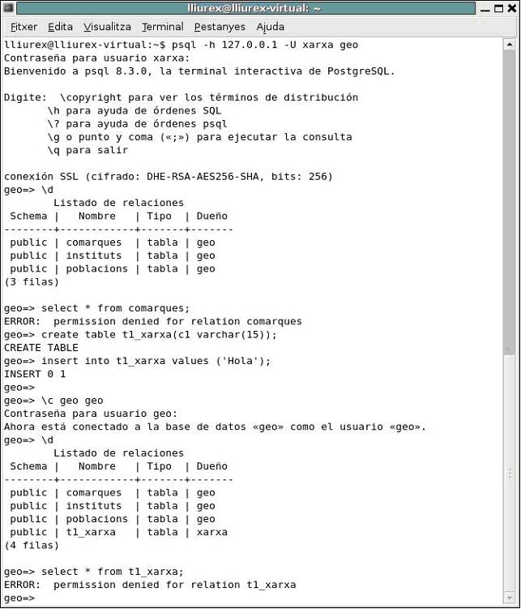
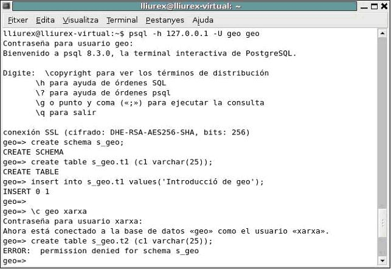

5.2 - Esquemas
En una Base de Datos tendremos como mínimo un Esquema (Schema),
aunque podemos tener más de uno con diferentes permisos de acceso. El esquema
será, por tanto, una separación lógica de la Base de Datos. En cada esquema
podremos crear diferentes objetos (tablas, vistas, funciones, ...).
Siempre que creamos una Base de Datos se crea el primer esquema
que será público.
Eso quiere decir que cualquiera usuario que se conecte a la Base de Datos podrá
listar las tablas de este esquema, e incluso crear sus tablas,
si no hemos controlado el acceso a la Base de Datos (con pg_hba.conf). Así llegaríamos a la contradicción que el
propietario de la Base de Datos no podría ver el contenido de estas tablas
creadas por otro usuario en su Base de Datos (en el esquema público). Por ejemplo,
el usuario geo es
propietario de la Base de Datos geo, donde solo hay un
esquema, público. Si no impedimos el acceso
de otros usuarios (ved pregunta 4.5 Autenticación de usuarios), se podría
conectar el usuario xarxa,
por ejemplo. Este usuario podría ver qué tablas hay creadas, aunque no podría
ver su contenido (si no tiene permiso por medio de Grant). Pero perfectamente podría crear una tabla en
este esquema, t1_xarxa. Entonces el usuario geo, no podrá ver el contenido de esta tabla porque
no es suya. En la imagen tenemos todo este proceso.

Para evitar a que se cuelan, podemos por una banda limitar el
acceso por medio del pg_hba.conf. Y por otra limitar el
acceso al esquema público o crear otros esquemas.
La sintaxis de creación de un esquema es uno de los dos
siguientes:
CREATE SCHEMA nombre_esquema
[ AUTHORIZATION nombre_usuario ]
CREATE SCHEMA AUTHORIZATION nombre_usuario
Si no se especifica el nombre del esquema se debe especificar
quien tiene la autorización (quien es el propietario), y entonces el nombre del
esquema será el mismo del usuario.
Si no se especifica el usuario, el propietario será quien hace la
creación.
Para poder crear el esquema en la Base de Datos se debe tener
permiso (solo el propietario y superusuarios). A un esquema creado en principio
nada más tendrá acceso el propietario, aunque se puede dar permiso por medio de
GRANT.
Para crear un objeto dentro de un esquema que no sea público (que
es el esquema por defecto), se deberá calificar el objeto con el nombre del
esquema, es decir nombre_esq.nom_obj.
Vamos a ver un ejemplo basado en el ejemplo anterior, por ver como
limitamos el acceso.

Hay manera, por hacer las cosas más cómodas, de cambiar el orden de los esquemas para un usuario (por defecto el primero es el público), pero con lo que hemos visto ya hemos cumplido las espectatives del curso.